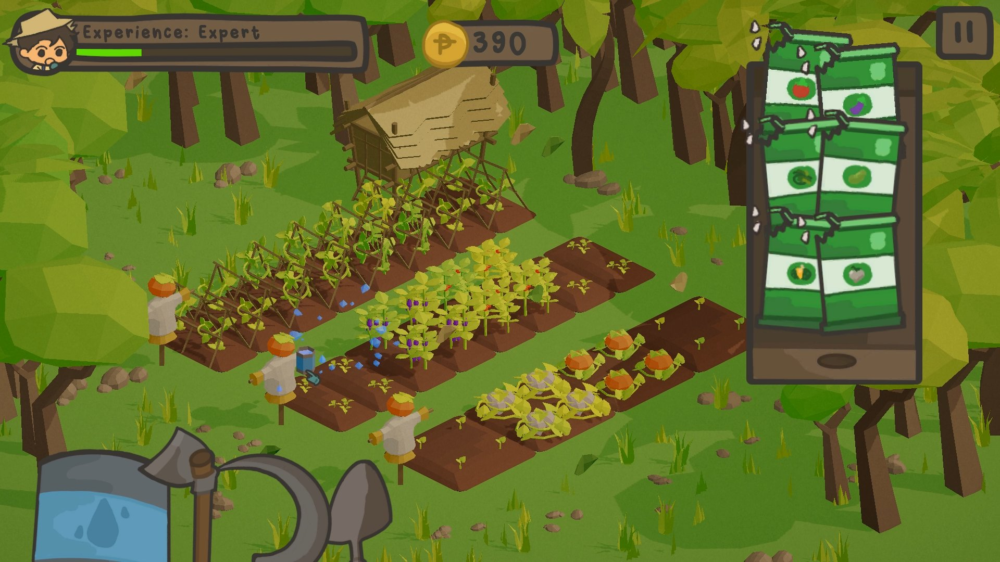

Visual Direction & Cozy Theme
Defined the warm, approachable agricultural aesthetic combining stylized 3D greenery and farmstead architecture with playful 2D illustrated UI accents.

Art Director & Project Hustler
Blender, Unity Engine, Adobe Photoshop, Procreate
Rapid Hackathon Sprint (Executable MVP)
Interactive Farming & Educational Game
Led visual direction, environment/prop aesthetics, and startup pitch/product strategy as the team’s Art Director and Hustler during a rapid hackathon sprint—shaping the cozy agricultural theme, scoping an executable MVP.
Defined the warm, approachable agricultural aesthetic combining stylized 3D greenery and farmstead architecture with playful 2D illustrated UI accents.
Guided environment and prop look-dev across Blender, Adobe Photoshop, and Procreate for readable crops, trellises, tools, and interactive farm plots in Unity.
Served as Project Hustler during the hackathon sprint—aligning product scope, pitching the educational farming concept, and shipping a playable MVP.